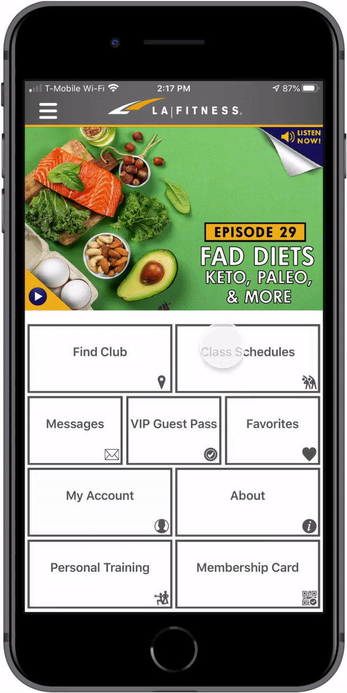
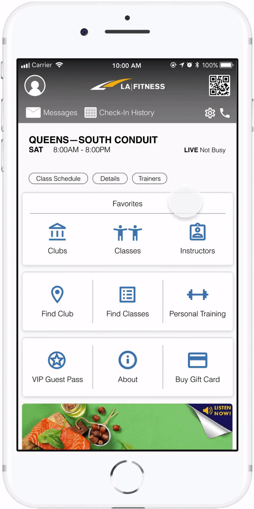
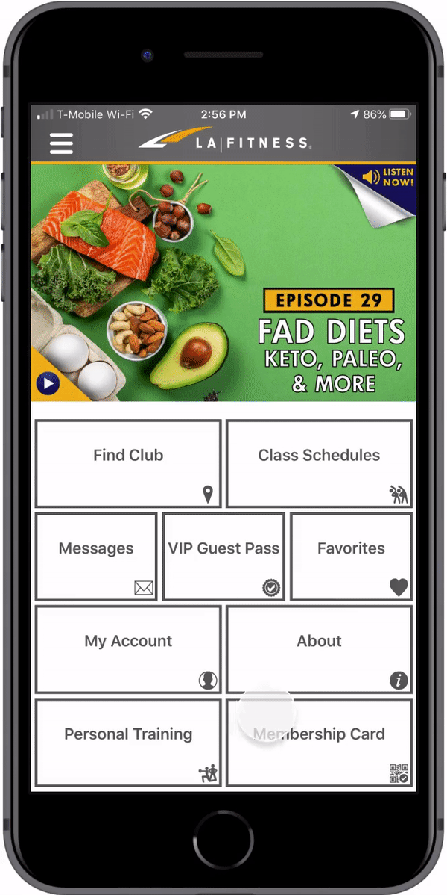
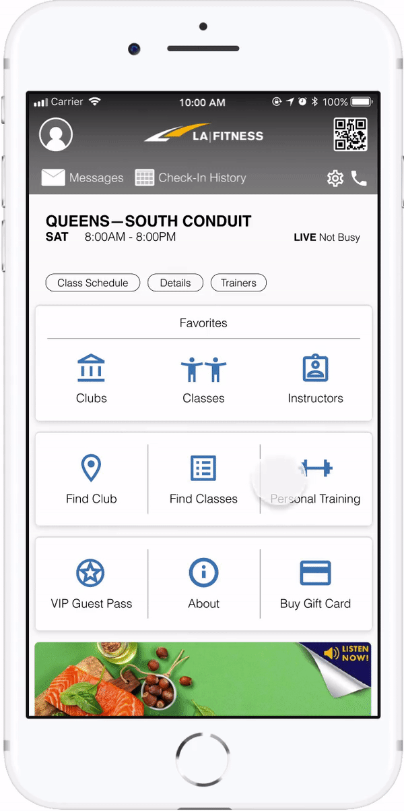

LA FITNESS iOS REDESIGN
—Mobile App for gym members to maximize fitness opportunities
PROJECT TYPE
Individual Project
DELIVERABLES
High Fidelity Mockups
DURATION
3 days
BACKGROUND
Being active is a HUGE part of my life, so when I stopped rowing, I got
a gym membership so I could (attempt to) keep up my fitness! My family was
already part of LA Fitness, so it was easy for them to add me to their plan.
Once my membership was good to go, my dad had me download the LA Fitness App,
which I would need for check-in since they don’t give physical membership cards.
I got the app, set up my account, and was good to go! However every time I go to
the gym I’m struck by how poorly the app is designed in regards to structure and
aesthetic. The home page is extremely busy, the overall app is very text heavy,
acessing the membership card is difficult, and finding information is very inconvenient!
And I’m not alone in this opinion.
The app has over 1.5K ratings and reviews in Apple’s App Store receiving an overwhelming amount of negative reviews and 1 star ratings. These responses showed a strong need for an improved mobile experience, so I decided to challenge myself and redesign this app!
RESEARCH: MAJOR INSIGHTS
I collected insight on how LA Fitness members use and regard the app by interviewing 3 gym members and reading 100+ of the most recent reviews in the App Store. Here's what I found:
Check-in tracker hidden under My Account"I feel like the app should provide an option for the digital membership tag to be added to the Apple Wallet so you can double tap the button, scan and your on your way."
"The only reason I use the app is to pull up my membership barcode."
Home page is cluttered and overwhelming"It takes too many clicks to get to your check-in history..."
"Need the “Check In” view that tracks visits to work, for my employer to verify visits."
Accessing home club’s information (i.e. schedules, hours of operation) is inefficient"There are so many menus, subcategories that can all be merged and simplified."
"The clunky buttons overcrowd the home screen."
Searching for classes is tedious"Getting to schedule for my club is tedious… Every time it insists on searching for all clubs “near” me, and making me choose which one I want to see a schedule for."
"Can we add a function on the front homepage with the Hours of Operation for the users Home Club?"
Outdated UI"I wish we could look at multiple class types at the same time."
"Why can't I search a specific class type for a specific club?! Why is it only one or the other??!!!"
"The app isn’t up to date with the new modern interfaces and just isn’t aesthetically pleasing."
"Congratulations! This looks like a hideous website from the 90s."
Users inefficiently navigate through the app due to the its current page structure and organization
COMPETITIVE ANALYSIS
I examined how other popular gyms structure their app home pages, especially where they place access to the digital membership card and noting what type of information they include on the home page. Here's what I found:
All 4 apps place access to the membership card in one of the top corners, instead of having it out of site at the bottom of the screen as LA Fitness does. Additionally all these apps include a feature to log workouts, which LA Fitness currently doesn't offer, but should consider implementing. As for layout, Crunch Fitness and Gold's Gym are structured similarly to LA Fitness with the home page acting as the main menu, while Youfit and Planet Fitness have a bottom navigation bar. This allows more space for Youfit to include a calendar and advertisements and Planet Fitness to include a slider with weekly workout stats and advertisements. Lastly, Crunch Fitness has a cool feature called Crunch Live that allows users to watch live workout classes.
SKETCHES
Incorporating the insights from my research, I sketched 3 different home pages to start my ideation phase:

Sketch 1—This design eliminates the extra step users currently take to get to their membership card by having it available on the home page. However some gym members still use their physical membership card for check-in and only use the app to look up gym information, so having the qr code as the home page's focal point wouldn't help these users.
Sketch 2—This design keeps the app's current layout of having rows of buttons, but changes the podcast advertisement to a block that includes easy access to the user's home club's information. Additionally, access to the membership card is moved to the top right corner.
Sketch 3—This is probably the simplest design of the three. It includes a personal greeting with an image of the physical membership key tag that users can click to pull up their digital one. Following are the list of available app features.
After fully reviewing my sketches, I decided to pursue sketch 2 because I decided against including the membership card on the home page in case people use the physical one in favor for adding an option to add the membership card to the user's Apple Wallet. Additionally, I like how this design makes the home club's information easily accessible by providing shortcuts to its class schedule and details.
REDESIGN: HIGH FIDELITY SCREENS
After sketching the remaining pages, I created high fidelity screens in Figma. You can click through the prototype here
01. home page
Problem—Disorganized and cluttered. Doesn’t empower users to efficiently navigate the app.
RedesignHeader—Account Profile and Membership Card buttons placed in the upper corners of the header for better discoverability. Messages, Check-In History, Settings, and Contact Us buttons minimized and added to the bottom of the header because they’re important features but secondary to the Account Profile and Membership Card features.
Home Club Info—Home club name, hours, and shortcuts to its class schedules, details, and trainers added to the home page to streamline how frequently sought out information is accessed. New feature that tells users if the gym is currently busy or not busy, so they can factor that into their decisions.
Favorites—Expanded the Favorites button to improve its discoverability and provide shortcuts to your favorite clubs, classes, and instructors.
Additional Buttons—Button icons enlarged, colored, and centered to improve aesthetics.
Slider—Promotional items moved below the buttons and placed in a slider so LA Fitness can promote multiple things (i.e. podcasts, blogs).
02. membership card
Problem—Too many steps to manually pull up the membership card. QR code is difficult to scan. Using location services to automatically pull up your membership card when close to LA Fitness drains your phone battery.
Redesign—Give users option to add membership card to Apple Wallet to streamline process. Enlarge QR code to improve how it scans.
Current Design
Redesign
03. check-in history
Problem—Lack of discoverability for the Check-In History feature because it’s hidden under Account Profile.
Redesign—Placed a Check-In History button on the home page's header for easier accessibility.
Current Design

Redesign

04. favorites
Problem—Bottom navigation bar is overlooked. Lists are text heavy and hard to read.
Redesign—Navigation bar moved to the top to make it more noticeable. Improve readability for the lists by removing unnecessary text and placing list items into blocks.
Current Design
Redesign
05. find classes
Problem—Filter options for finding classes is limited to one location or one class type. List of classes is difficult to read.
Redesign—Allow users to trigger multiple filters (e.g. location, class type, time) at once to optimize how one finds classes. Improve list's readability by enlarging the class name, day, and time. Reserve button added to the list for efficiency.
Current Design: Near Me

Current Design: By Type

Redesign

06. find clubs
Problem—Find Club feature has 3 different pages: search, map, list. Search bar is only available on feature’s search page. List of clubs appears on both the list page and under the search bar on the search page leading to lots of confusion.
Redesign—Search bar is always available so users can freely change the search query. Navigation bar added under the search bar so users can easily switch between the list and map.
Current Design

Redesign

CONCLUSION + NEXT STEPS
Since completing this redesign, I've noticed that some iOS users have a different home page than mine including an additional feature for court reservations (note: I made sure I have the latest update!). I want to see how this new feature would factor into my redesign. Also, I would love to do usability testing to get insight on potential areas for improvement in my redesign!
Check out some other projects: